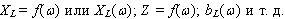
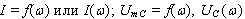
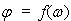
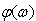
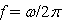

3.7.2.2. ѕон€тие о частотных характеристиках
 «ависимость амплитудных (действующих) значений тока и напр€жений на элементах контура от частоты ω называют резонансными кривыми или амплитудно-частотными характеристиками (ј„’) тока и соответствующих напр€жений, например,  и т. д. «ависимость угла сдвига фаз φ между напр€жением и током на входе цепи от частоты ω называют фазо-частотной характеристикой (‘„’) контура, т. е.  или . Ёкстремальные значени€ функций на графиках частотных характеристик или на резонансных кривых соответствуют резонансным режимам. ѕримечание. “ак как на практике обычно пользуютс€ циклической частотой  , то результаты экспериментальных исследований иногда представл€ют в виде графиков и т. д. |